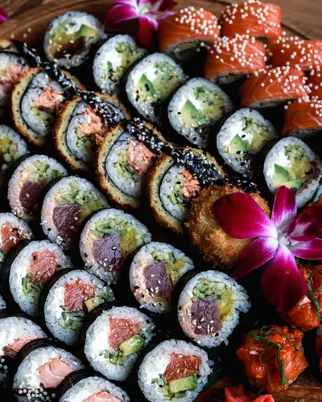
porcja 6 szt.
Futomaki
Grube rolki zwijane w nori, wypełnione ryżem i kilkoma składnikami.
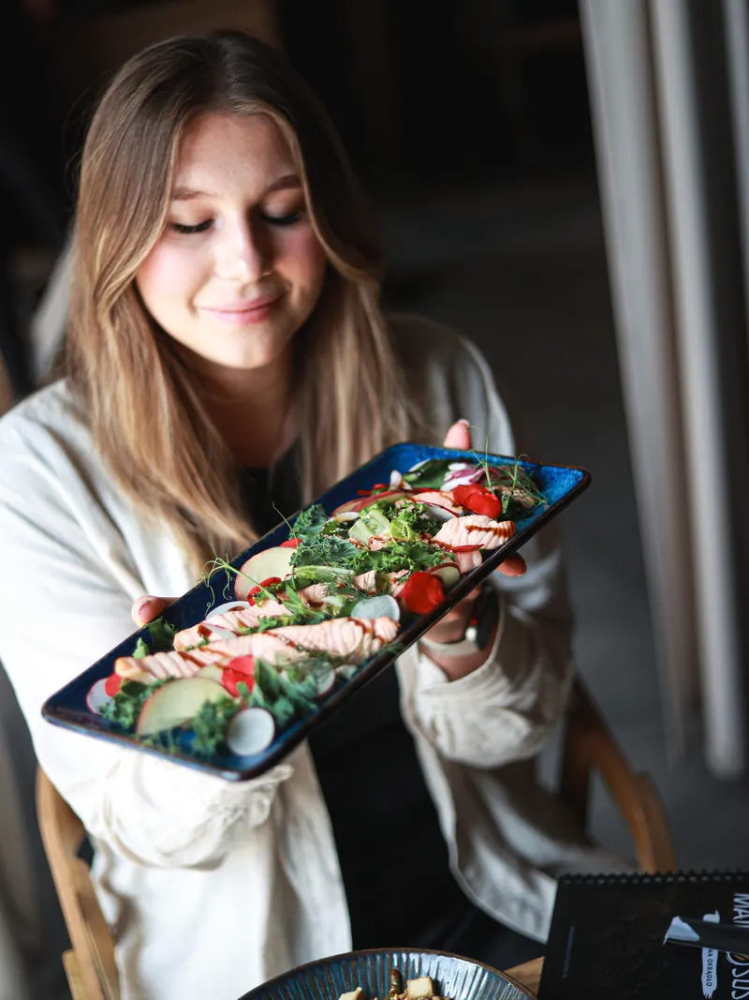
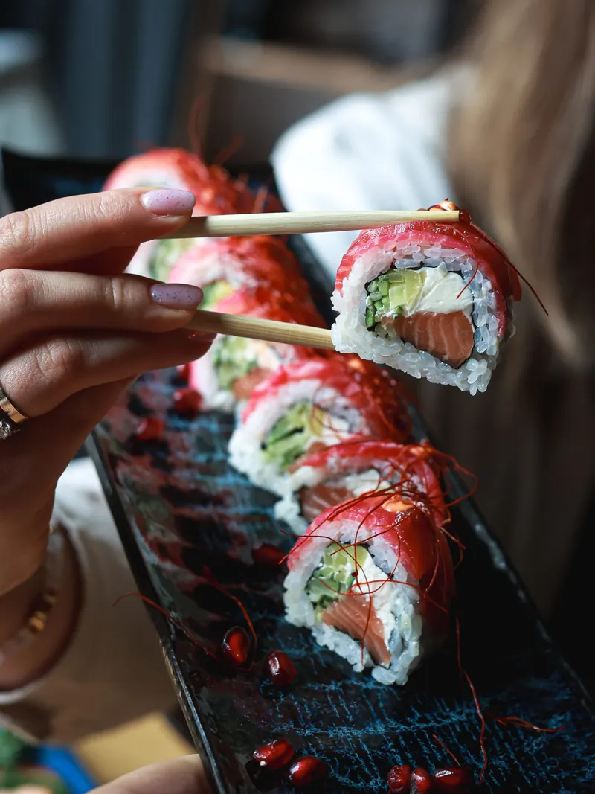
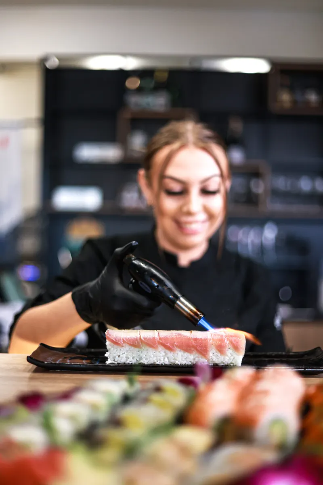
Rolki kręcone w chwili zamówienia, ramen i udon. Plac Wolności 7, w samym centrum Miasta Róż. Na miejscu, na wynos i z dowozem.
Każda rolka powstaje w chwili zamówienia i trafia na stół najszybciej, jak potrafimy. Ryby i owoce morza bierzemy od sprawdzonych dostawców, a kompozycje układamy sami.
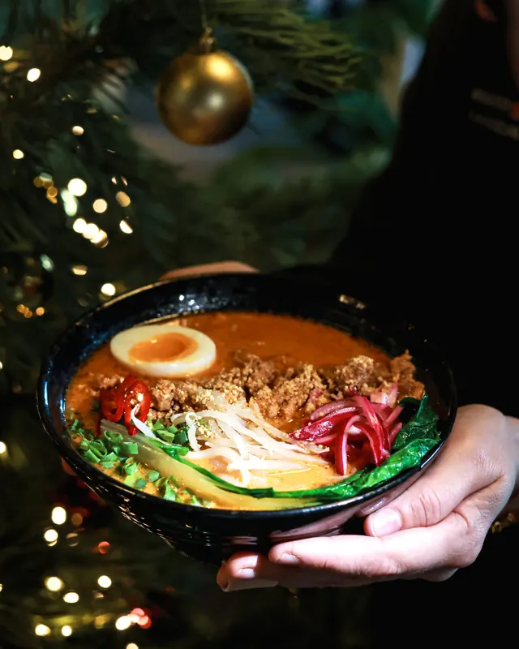
Na ramen w godzinach 12:00-16:00. Wpadnij w przerwie albo zamów do biura.
Catering na wesela, bankiety i spotkania firmowe oraz Mobilny Sushi Bar - sushi master kręci rolki na oczach gości.
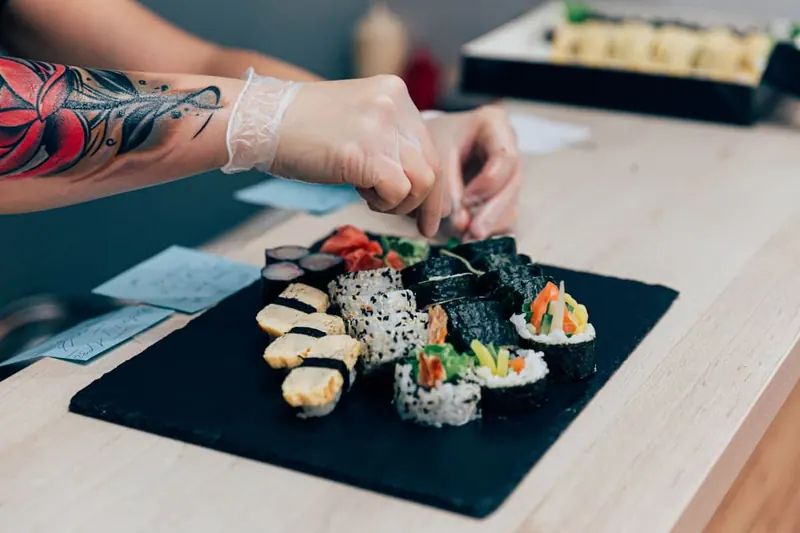
Eventy firmowe, imprezy okolicznościowe i przyjęcia w plenerze. Ofertę układamy pod liczbę gości i charakter wydarzenia.
669 855 500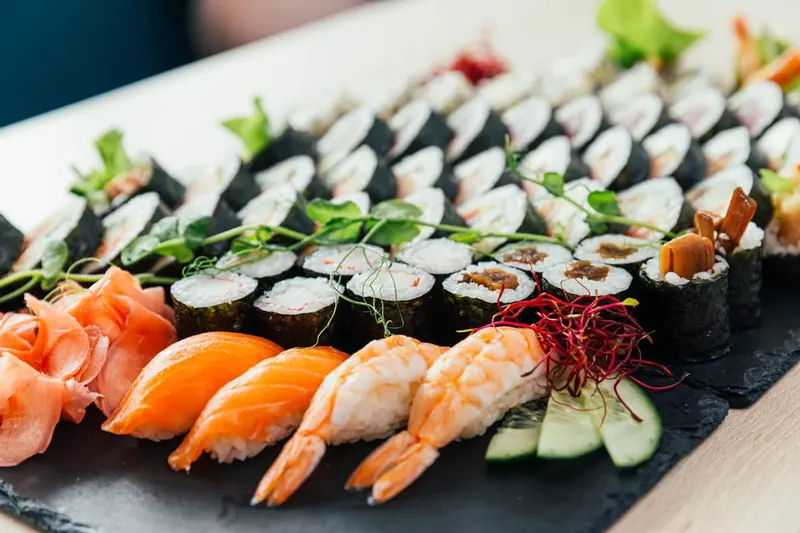
Zestawy na wydarzenia i dowóz do sąsiednich miast. Menu dobieramy indywidualnie.
Kilka kadrów z naszej kuchni i sali. Przesuń, żeby zobaczyć więcej.
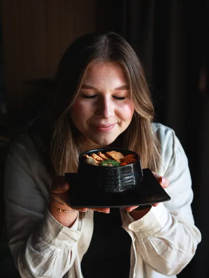
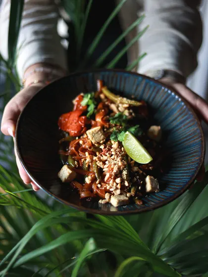
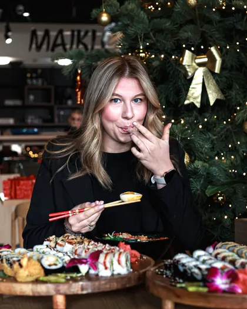
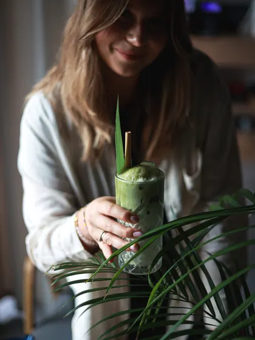
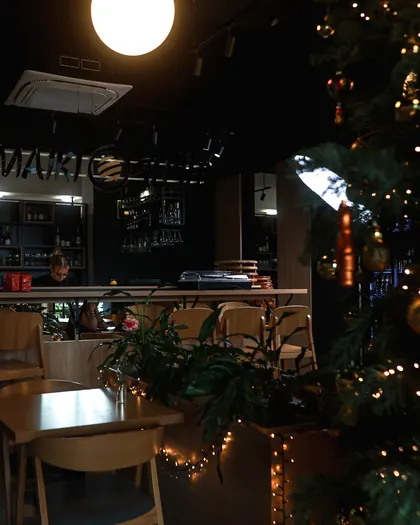
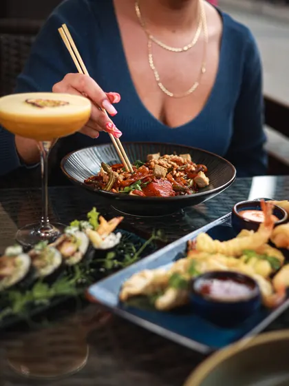
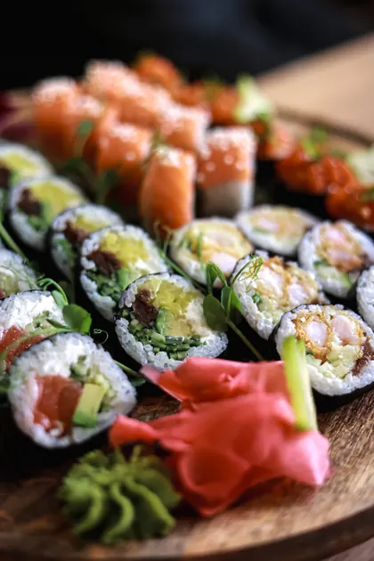
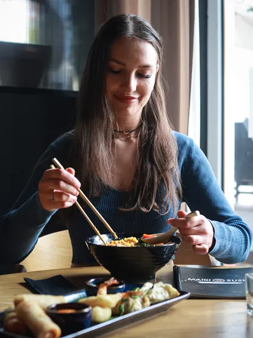
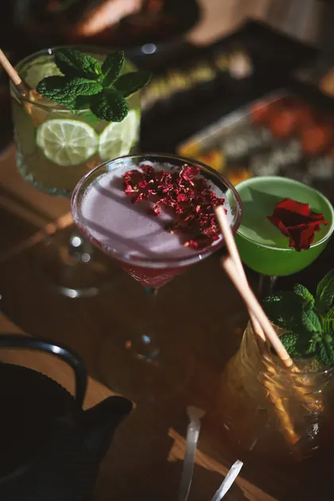
Plac Wolności 7, 99-300 Kutno